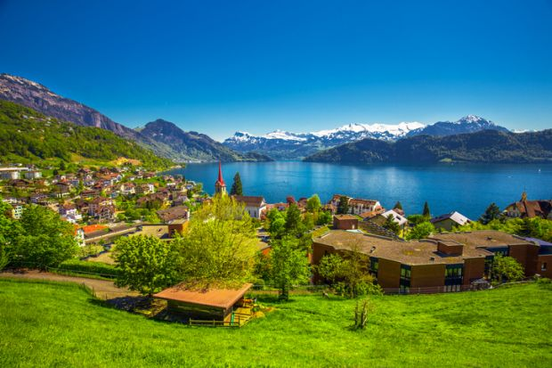
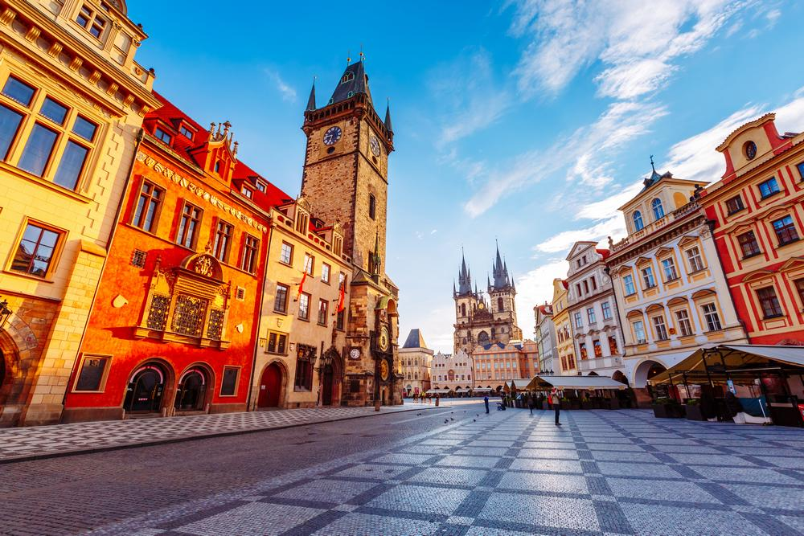

Stories Uploaded By: Khushboo, Nishant, Kay / / WDDM - (113-114)
All good Indian stories start with a queen. In the princely days before Independence, Kovalam’s story starred a quiet fishing beach, an unassuming maharani (queen) who found the area pleasing and a clifftop palace built for her to while away the monsoon. Years later, locals followed the queen’s lead, with picnics, and hippies weren’t far behind. Now paths run through palm-tree groves to guesthouses, beachfront restaurants serve up the morning haul and beach-umbrella wallahs offer shade and lounge chairs.
Hawa Beach, near the candy-stripe lighthouse on the headland, may be the liveliest. Here, little boys slurp ice lollies from the ice-cream rickshaw, toddlers sit in their underwear at the water’s edge and teenage girls dressed in salwar kameezes (traditional outfits of tunic and trousers) hold hands in the water, giggling and shrieking with every wave. Further down the beach, two best friends sit apart from their software engineer colleagues playing cricket, sifting the sand through their hands as they talk about their new husbands and their lives back in Trivandrum. Jeffy Paulose, one of Kovalam’s lifeguards, points to the fully clothed beachgoers in inch-deep water nearby: “We Indians don’t study swimming in school, so everyone stays close to shore,” he says. The beach here has such a communal feel that lifesaving quickly becomes a group activity. “One person starts flailing,” says Jeffy with a good-natured chortle. “We go to help, then everyone comes to help, and then everyone’s flailing. ”Kovalam is also a working beach town with an ancient fishing culture. At Poovar Beach, which is located a mile or two from Hawa, lights from hundreds of boats blink on the horizon at dawn, while men hike up their lunghis (garments similar to sarongs) to sit and wait for the work to come in. When the colourfully striped boats arrive, teams of men pull them in, along with the gargantuan nets, singing as they do so. Everything from catching, hauling, cooking and selling fish here involves the whole family; most people start young, learning from their parents, and continue the job for life. It’s difficult to imagine just how close these families are to the sea. However, you can see it on the faces of elderly men who, too old to work, still come to Poovar each morning, just to be near the water. read more..."You'll never know until you go. Leave nothing But footprints. Take nothing but pictures. Kill nothing but time. But but but, no magic please"
-- YOUR PASSPORT
In France, cheese is life. A commendable reason to visit in itself (yes, cheese tourism is a real thing) adding a little (okay, more than a little) fromage to your picnic basket is standard practice. Instead of sticking to well-known favourites you can get at home (no offence to brie and camembert) use your picnic as an opportunity to taste a little from the different regions of France. While bread and cheese is great, you’d be wise to balance out your picnic basket with some lighter bites.
When in season, you’ll be able to find flavoursome, locally-grown cherries, strawberries, raspberries, figs and grapes at reasonable prices in markets and grocers. Choosing your picnic location isn’t as easy as plonking a blanket or towel down on a soft section of lawn in a pretty park. While the French are known for enjoying the fine things in life, many parks and gardens in Paris don’t allow people to luxuriate on the grass with a cheese-stuffed baguette in hand. So before you set yourself up, read the signs, know the rules and you’ll avoid being one of those tourists. read more..."Live with no excuses and travel with no regrets"
~ Oscar Wilde
There’s no need to rush your visit to Zurich, Switzerland. Take a short day trip to this picturesque waterfront city of Zurich, and spend your time relaxing by the lake or perusing one of its many museums. If you want to spend your day learning the country’s history, then check out the Swiss National Museum. This is a collection of three museums — the National Museum Zurich, the Forum of Swiss History Schwyz, and the Collections Center. 
These museums explore Swiss history from the beginning to the present day, Swiss identities, and the country’s culture. The Romanesque-style Grossmünster church is one of Zurich’s landmarks. The legends say that Charlemagne founded Grossmünster when his horse fell to its knees at the tombs of Zurich’s patron saints, Felix and Regula. The church is easily recognized by its two neo-Gothic-topped towers. With a trip inside the church, you can see the beautiful stained glass windows. The church is open in the summer (March 1 — October 31) daily from 10 a.m. — 6 p.m. and in the winter (November 1 — February 28) daily from 10 a.m. — 5 p.m. The church is free to visit, however, there is a CHF 5 charge if you’d like to go to the top of the tower.Zurich is situated on the northwestern end of Lake Zurich. On a bright and sunny spring day, you’ll find plenty of people eating lunch and basking in the sunlight, admiring the views across Lake Zurich. read more..."LIFE IS EITHER A DARING ADVENTURE OR NOTHING AT ALL"
~ HELEN KELLER
Steeped in history, brimming with charm, and speckled with orange-topped roofs lies the city of Prague in the Czech Republic. Whether you love castles, beauty, or are just hankering for a good beer, Czech Republic's most popular city is one of the most interesting in Europe. 
I've been to Prague in the summer and winter and I find it a wonderful place to visit no matter the season. As one of Europe's best preserved cities you'll meander cobblestone streets to beautiful cathedrals, the commanding Charles Bridge, and might just crawl home from a night out at the bar. This 3 day travel guide to Prague will map out the perfect way to spend your time. The Czechs have a wonderful spirit. You get a sense that they are not just tolerating tourists, but want to show off their city. On our way to our hotel, our cab driver commented that, “tourists bring money.” And I have to agree. I think having this attitude is a great way to interact, and makes this unpretentious city all the more loveable. But what I find the most fascinating is their beer consumption – which might explain their positivity. The average Czech citizen (that includes babies and elderly) consumes 300 liters of beer a year. That's nearly an entire liter a DAY per person. They are serious about their beer (and their food, too.) They know how to have and show you a good time. Prague is the perfect place to relax, explore, and get a feel for the history of Europe. Now, it's time to see the bridge in the light this time. The Charles Bridge is one of the most interesting and was finished back in 1402. Much like the other places in Prague, the bridge has its own legend. It's said that construction began on Charles Bridge at 5:31am on July, 9 1357 and the first stone was laid by Charles IV himself. This timing was important because he believed in numerology and this specific time formed a palindrome (1357 9, 7 5:31) and would transfer more strength to the bridge itself. I think old Charles might have been right since this is one of the most visited bridges in all the world. Make sure to tough the statue of St. John Nepomuk and make a wish to return to Prague. read more..."TRAVEL IS FATAL TO PREJUDICE, BIGOTRY, AND NARROW MINDEDNESS, AND MANY OF OUR PEOPLE NEED IT SORELY ON THESE ACCOUNTS."
~ MARK TWIN